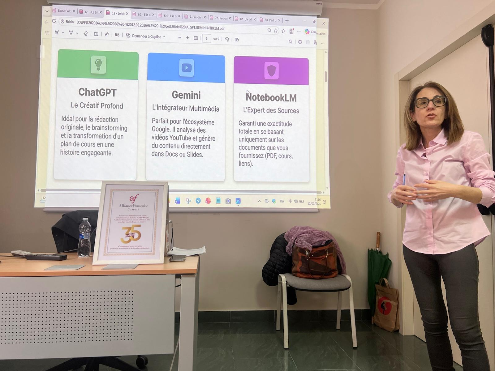

01Langues
Formation linguistique
Parcours adaptés aux objectifs, au niveau, au secteur et au profil des apprenants.
Formatrice en langues, ingénierie pédagogique et usages professionnels de l’IA générative.
J’accompagne adultes, enseignants et organismes de formation avec des parcours linguistiques, des dispositifs pédagogiques sur mesure et des usages concrets du numérique et de l’IA.
Former en langues, concevoir des parcours adaptés aux besoins réels et aider les professionnels à intégrer des outils numériques sans perdre l’exigence pédagogique.
Près de vingt ans d’expérience dans l’enseignement et la formation, en Italie et en France. Mon travail associe expertise linguistique, formation d’adultes, préparation et évaluation DELF/DALF, conception de parcours et création de ressources numériques.
Les interventions peuvent être construites comme une formation ponctuelle, un parcours plus long ou une mission de conception pédagogique.
Parcours adaptés aux objectifs, au niveau, au secteur et au profil des apprenants.
Italien pour francophones, communication en contexte professionnel et situations interculturelles.
Anglais général, commercial et touristique pour adultes et contextes opérationnels.
Préparation aux certifications, entraînement aux compétences et évaluation selon les critères officiels.
Analyse des besoins, scénarisation, différenciation, adaptation des supports et évaluation.
Usages professionnels, prompting, adaptation de contenus, personnalisation et contrôle qualité.
Sites interactifs, activités autocorrectives, jeux pédagogiques et supports multimédias.
Ateliers pratiques autour des outils, méthodes et usages transférables dans un contexte réel.
Expérience de publics internationaux, environnements francophones et anglophones et contexte touristique.
Une intervention utile doit produire quelque chose de directement exploitable : une compétence, un parcours, un support, une méthode ou un dispositif.
Objectifs, public, niveau, contraintes, modalités et critères d’évaluation sont définis avant la production des supports.
Langues générales ou professionnelles, communication, besoins touristiques et commerciaux, préparation ciblée.
Transformation de contenus existants en activités interactives, parcours en ligne, supports autocorrectifs et formats plus accessibles.
Prise en main, prompting, adaptation des contenus, création de ressources, vérification des résultats et usages responsables.
L’expérience DELF/DALF renforce une pratique de l’évaluation structurée, explicite et reliée à des compétences observables.
Atelier ponctuel, module intégré à un parcours, conception en amont ou accompagnement plus long, en présentiel ou à distance.
Ces formats servent de base de travail. Le contenu peut être ajusté au secteur, au niveau d’autonomie du public et aux outils disponibles dans la structure.
Public, contexte, attentes, contraintes et niveau de départ.
Objectifs, progression, modalités, supports et critères de réussite.
Ressources, activités, scénarios, outils et documents de travail.
Mise en situation, test des consignes et observation des usages.
Ajustement au public, au rythme et aux contraintes rencontrées.
Vérification des acquis, du transfert et de l’utilité du dispositif.
Les outils numériques ou l’IA interviennent à l’endroit où ils apportent un gain réel : préparation, adaptation, différenciation, production ou suivi. Ils ne remplacent pas l’analyse pédagogique.
Chaque exemple montre une facette différente : formation de formateurs, ingénierie, création numérique, certification ou parcours à distance.
Conception d’un parcours avancé centré sur le passage de l’usage de l’IA à la création de dispositifs pédagogiques concrets : ressources interactives, différenciation, assistants et production transférable.
Consulter la proposition↗
Atelier pratique avec démonstrations, production de ressources et mise en application des outils dans des situations pédagogiques concrètes.
Voir un support↗
Un support qui formalise des méthodes pour cadrer une demande, produire, standardiser et contrôler les résultats de ChatGPT ou Gemini.
Ouvrir le support↗
Conception de ressources numériques et interactives à partir d’objectifs pédagogiques précis, avec vérification et adaptation avant utilisation.
Voir l’exemple↗Support structuré autour de la stratégie d’épreuve, de l’argumentation et de l’organisation du discours.
Consulter le PDF↗Exemple de site conçu comme une activité progressive avec navigation, interaction et exercices contextualisés.
Ouvrir le site↗Organisation de parcours à distance, adaptation continue des supports, préparation aux certifications et suivi de publics adultes.
Je choisis l’outil selon la tâche : concevoir, adapter, publier, faire pratiquer, documenter ou produire.
Ce portfolio présente des usages professionnels de l’IA générative. Il ne revendique pas une expertise en machine learning ou en développement logiciel.
Formation en IA appliquée à l’éducation, évaluation finale réussie.
Formation en cours.
Formation certifiante — PaLEoS.
Diplôme universitaire de Français langue étrangère.
Université télématique IUL — parcours 30 CFU, note 10/10.
Alliance Française de Sassari.
Habilitation à l’évaluation des niveaux A2 à C2.
Université de Sassari — français et anglais, 110/110.
Basée en Sardaigne. Disponible pour des interventions en Corse, en France, en Italie et à distance.
Je peux intervenir sur un besoin linguistique, une formation de formateurs, la création d’un dispositif pédagogique ou l’intégration concrète de l’IA générative dans une pratique professionnelle.